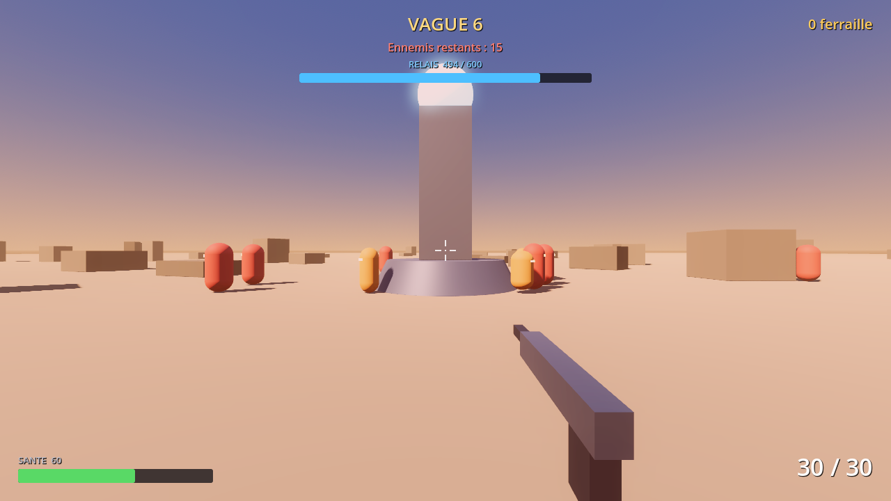
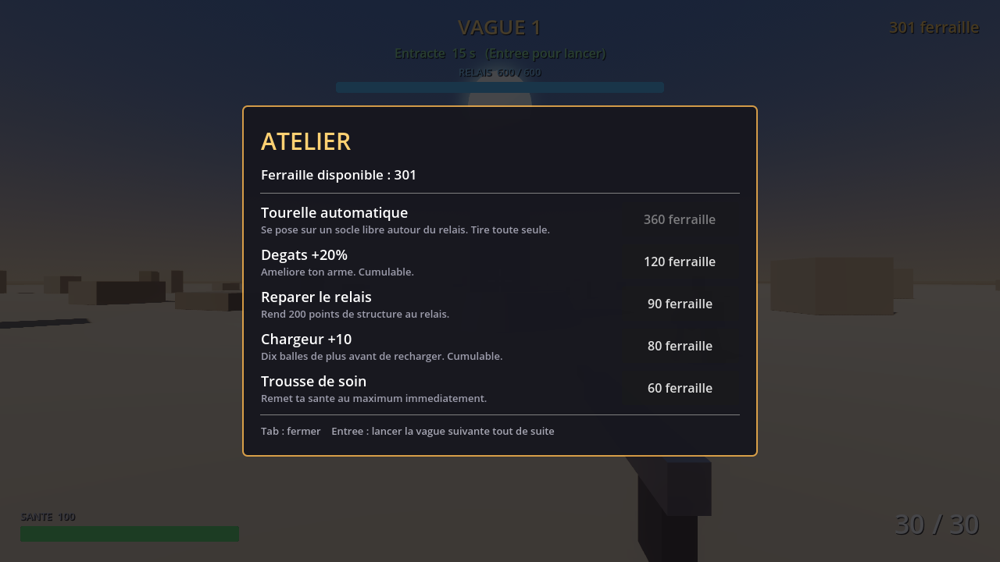

Rodeur
Des la vague 1
Le gros des troupes. Rien d'exceptionnel seul, mais il arrive en nombre et encaisse suffisamment pour couter des munitions.
Vitesse
Resistance

FPS solo — defense par vagues
Un relais au milieu du desert. Toi, une arme, et tout ce que tu peux construire entre deux vagues. Les ennemis ne s'arretent pas — seule la nuit tombe plus vite que ta ferraille ne s'accumule.
Le poste
Chaque vague finie te laisse un court entracte pour depenser la ferraille recuperee sur les ennemis : une tourelle de plus, un chargeur plus grand, un relais reparti a neuf. Puis ca recommence, un peu plus dur. Les commandes sont lues par leur position physique sur le clavier — naturellement ZQSD en AZERTY.
Commandes
Rapport de menace
Trois profils identifies. Chacun rejoint la file a une vague donnee et ne la quitte plus — les compositions s'additionnent, elles ne se remplacent pas.
Des la vague 1
Le gros des troupes. Rien d'exceptionnel seul, mais il arrive en nombre et encaisse suffisamment pour couter des munitions.
Vague 3
Rapide et fragile. Deux ou trois balles suffisent — mais il te deborde si tu restes concentre sur autre chose trop longtemps.
Vague 5
Lent, enorme, et frappe fort au contact. Le laisser approcher le relais sans y consacrer une tourelle est une erreur qui se paie cher.
Entre deux vagues
Le seul moment de repit. Depense ta ferraille — mais l'atelier ne met pas la partie en pause : l'ouvrir pendant une vague reste un risque.

Installation
Un fichier unique et autonome. Pas d'installateur, pas de compte, pas de launcher — tu le lances comme n'importe quel programme.
Code source ouvert. Fait avec Godot 4 — aucun asset externe, tout le visuel est genere par le moteur. Chaque modification recompile automatiquement les deux versions.
Voir le depot →